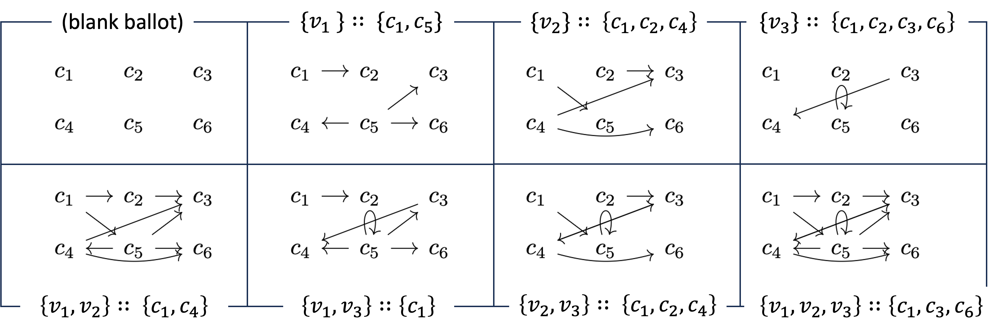

All definitions, propositions, lemmas and theorems of multi-winner voting with argumentative ballots are formalised and mechanically checked in Lean 4.
Abstract
We introduce multi-winner voting with argumentative ballots (MVArg) and investigate theoretical properties. As our conceptual contribution, we generalise approval ballots to argumentative ballots, thereby allowing voters to express defeasible preferences over candidates. We accordingly generalise voter cohesion and justified representation axioms JR, PJR and EJR. As our theoretical contribution, we establish several key results. First, MVArg is strictly more expressive than multi-winner voting with approval ballots (MV). Second, our notions of cohesion and justified representation are conservative generalisations of their counterparts in MV. Third, the MVArg counterpart of JR can always be satisfied, whereas the counterparts of PJR and EJR cannot always be. Fourth, although verifying whether a winner set satisfies the MVArg counterpart of JR is already coNP-hard, such a winner set can be constructed in polynomial time. All definitions, propositions, auxiliary lemmas and theorems have been formalised and mechanically checked in Lean 4.
Problem
Approval-based multi-winner voting cannot capture defeasible preferences over candidates. The paper seeks a more expressive ballot format and appropriate justified representation axioms for it.
Approach
Argumentative ballots generalise approval ballots via abstract argumentation frameworks, where collective approval is induced by the grounded extension of pooled attack claims. Voter cohesion and the JR, PJR and EJR axioms are generalised to ArgJR, ArgPJR, ArgEJR and ArgEJR-Spot. All definitions, propositions, lemmas and theorems are formalised and certified in Lean 4.

Figure 1: The first row from left to right : a blank ballot; v_{1} ’s ballot approving c_{1} and c_{5} ; v_{2} ’s ballot approving c_{1},c_{2} and c_{4} ; and v_{3} ’s ballot approving c_{1},c_{2},c_{3} and c_{6} . The second row from left to right : \{v_{1},v_{2}\} ’s collective approval of c_{1} and c_{4} ; \{v_{1},v_{3}\} ’s collective approval of c_{1} ; \{v_{2},v_{3}\} ’s collective approval
Results
Argumentative voting is strictly more expressive than approval voting and the new axioms conservatively generalise their counterparts, preserving the inclusion hierarchy. A winner set providing ArgJR always exists and is polynomial-time constructible, though verifying it is coNP-hard; PJR and EJR counterparts need not always be satisfiable.